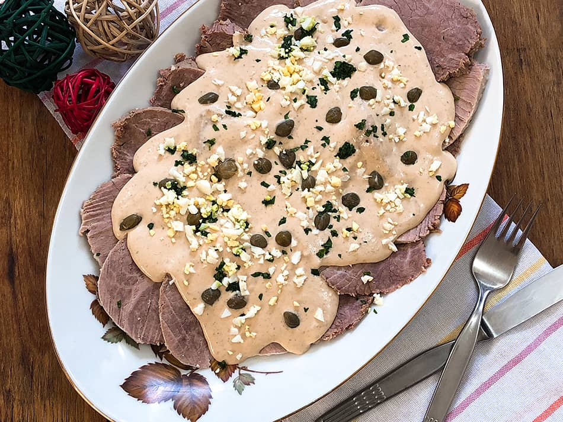

Vitel Tone

Se prepara con carne vacuna, acompañada de una salsa cuyos ingredientes principales son mayonesa, lomitos de atún, caldo de carne, anchoas y alcaparras.
Ingredientes
- 1 peceto de 1,5kg. aprox.
- 2 vasos de vino blanco
- 1 caldito de carne
- 1 hoja de laurel
- 1 lata de atún
- 2 yemas de huevo duro
- 2 cdas. de aceite de oliva
- 3-4 anchoas
- 1 cda. de vinagre
- Jugo de medio limón
- 1 cda. de mostaza
- 2-3 cdas. de mayonesa
- 1 cda. de alcaparras + alcaparras extras para decorar
Receta
- Marinar el peceto en los 2 vasos de vino toda la noche. Este paso te lo podés saltear pero yo recomiendo hacerlo para que el la carne quede bien esponjosa y mucho más sabrosa. Ya les estoy tirando un secreto y recién empezamos.
- Pasado este tiempo, bridar el peceto (atarlo, para que conserve su forma redonda). Otro paso que podés saltear y que yo recomiendo hacer para que el peceto conserve mejor sus jugos y su forma.
- Hervirlo en el caldo por 1 hora en olla común o 40 minutos en olla a presión (yo usé la Pressure Cooker). Dejar enfriar también en el caldo.
- Mientras tanto, poner en la licuadora 1 cucharón grande del caldo en el que se hizo el peceto junto con las 2 yemas de huevo duro, el atún, las anchoas, las 2 cdas. de aceite de oliva, la cda. de vinagre, el jugo de limón, la mostaza, la mayonesa y la cda. de alcaparras. Licuar todos los ingredientes hasta obtener una crema fina.
- Cortar el peceto. A mi me gusta bien finito, lo más finito posible. Pero si ustedes prefieren un vitel toné con carne más gruesa pueden modificarlo a su gusto.
- Acomodar en una fuente y bañar con la salsa de atún y anchoas. Tirar (sí, dije tirar), más alcaparras por arriba. Devorar y ser feliz.